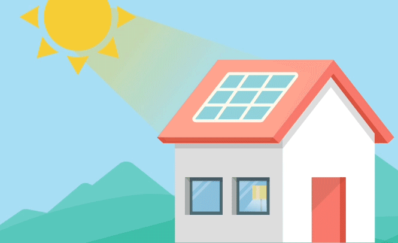

A energia solar é uma energia alternativa, renovável e sustentável. Sua energia é extraída do Sol a partir de seus raios solares e assim é convertida para energia elétrica e usada em diversas situações como, aquecimento de água, iluminação pública e sistemas de uso coletivo como escolas ou postos de saúde. Possui diversas tecnologias para geração de energia como fotovoltaica, térmica e heliotérmica mas cada uma com um funcionamento diferente. Além de ser uma fonte de energia limpa e sem danos à natureza.
No geral, a energia solar funciona a partir de placas solares que conseguem captar a luz do sol, após esse processo ela é transportada até seu conversor solar, responsável pela conversão da luz captada pelo painel solar e assim gerada a energia elétrica. Mesmo a energia solar tem várias tecnologias para geração de energia, como fotovoltaica, o painel solar reage com a luz do sol e produz energia elétrica (energia fotovoltaica) ou como heliotérmica, funciona de maneira indireta, captando o calor do sol, armazenando-o e convertendo-o em energia solar mecânica e, finalmente, em eletricidade.
Seu impacto ambiental é muito reduzido em relação à outras fontes como os combustíveis fósseis e as hidrelétricas. A energia solar pode ser também um importante instrumento na redução de emissões de gases de efeito estufa. além de outros benefícios como não polouir, é renovável, limpa e silenciosa. Por outro lado, para poder investir em energia solar, sua demanda é muita alta.